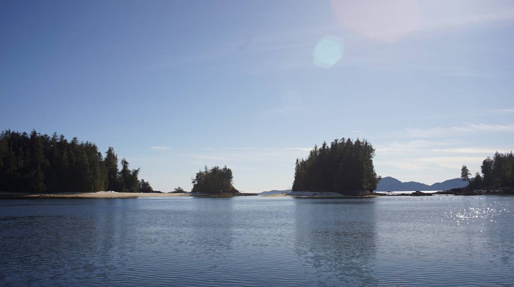

fury cove
We sailed into Fury Cove at 1600 on May 22nd. Prior to that, we were anchored in Millbrook Cove, just a short 13.6 NM away... short is correct, right? Well, technically yes, but when sailing into 15-25 NW winds the number painfully balloons up to 30 NM. We left the anchorage at 1000, shortly after SY Moonshine departed.
We weren't sure if we were going to go out to Fury Cove today, but staying here another day when the wind out there wasn't too crazy seemed silly...and seeing Moonshine depart gave us the kick in the butt we needed. The previous day had 30-35 knot winds, with gales forecasted all over B.C., our anchorage was snug and safe but the incessant strong gusts were a bit frightening. We had a lot of scope out, and there was only one other boat in the anchorage, we had plenty of room... but it was difficult to focus on anything, when the weather howls it takes center stage and leaves little room for relaxing hobbies. The winds lessened overnight.
We got up at 0800, switched the VHF on to the weather channel and listening for the forecast for our current area: McInnes to Pine Island. The forecast was 15-25 out of the NW, and the weather buoy at Egg Island called for 20 NW winds. Seas were 1-2 m, manageable, and so we headed out. We had a very short and pleasant downwind sail out of the mouth of the anchorage and around Bay Point. We knew this wouldn't last, after that we'd have to endure more closed-hauled sailing, more tacking into the wind and waves.
The waves were up, but manageable, Pino handles them well, and we know ocean waves, we've seen plenty. Even if ocean waves aren't frightening, they still make us sea sick. The waves were erratic, making the boat move in an uncomfortable way that almost ensures a visit from Sea Sickness. Rek didn't dare go below, and instead tried to focus on the horizon, begging for their inner ear to cooperate so the rest of this body could start having fun on the water again. "Where the fuck are my sea legs..." Rek asked aloud, to no one.
The coast here is reef strewn, we had to tack away and sail around many of them as we worked out way towards Fitz Hugh Sound, in the lee of Calvert Island. As we neared it, we found it difficult to advance, we were accumulating miles but not getting any closer to our chosen port. The land was diverting the wind in a way that almost halted our windward progress. The waves didn't help, either. We woke up Calcifer and asked that they carry us a little away from Calvert Island so we could find wind that would grant us progress again.
We found the wind about an hour later, and tacked all the way to the entrance to our destination: Fury Cove. At that point, neither of us had eaten lunch, in truth, we had not looked at the time. We were both starving, but preferred to wait until we were anchored to prepare food. Doing this isn't smart, we make mistakes and become impatient when we're hungry.

Fury Cove is tucked in deep on the NW side of Penrose Island. It is very well shielded from weather, with manageable anchoring depths. We dropped our anchor in 35 ft in a sand and mud bottom, expecting an additional 5 feet later on in the day. This anchorage is very scenic, with trees bordering one side and a white sand beach on the other, the beach end offers a view on Fitz Hugh Sound. You can sit in your quiet nook and observe the chaotic waters outside. There was only one other boat when we arrived.
We only stayed one night, because tomorrow some SE winds are forecasted, which ought to help us leap further north.